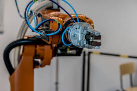
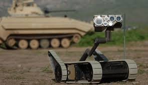
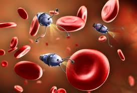

Primul robot a fost introdus in domeniul industriei, in anul 1961, de firma General Motors, in statul New Jersey, SUA. Desi robotii au fost inventati in America, astazi Japonia este primul producator si utilizatori de roboti industriali. Primul robot a fost adus din SUA in Japonia in anul 1967. Pana in anul 1978, Japonia producea 10.000 de roboti pe an, iar pana in anul 1980, de doua ori pe atat. pana la mijlocul anilor 1990, jumatate din totalitatea robotilor functionau in Japonia, mai ales in industria constructoare de masini si in industria electronica.
 Multe dintre fabricile de azi utilizeaza roboti in cazuls activitatiilor grele, monotone si comlicate. Spre deosebire de oameni, robotii nu obosesc si nici nu se plictisesc. robotii industriali sunt comandati de calculatoare pentru a indeplini anumite sarcini, de pilda vopsirea caroseriilor de masini sau sudarea partilor componente. Cei echipati cu "ochi" electronici pot fi folositi pentru examinarea si sortarea marfurilor.
Robotii pot fi utilizati in explorarea zonelor inaccesibile oamenilor, cum ar fi fundul marii si suprafetele altor planete. Pot fi folositi si in conditii periculoase, acolo unde sunt fumuri otravitoare si in jurul vulcanilor. Unii sunt utilizati pentru dezamorsarea sau bombelor in conditii sigure. Ei pot fi trimisi in zone de risc sau pot indeplini rolul de reporteri de razboi asemenea acestui Explorator Afghan.
In medicina moderna robotii sunt foarte prezenti, atat de la roboti chirurgi pana transportori de organe si roboti terapeuti. Tehnologia a evoluat de la roboti de marime umana pana la nanoroboti. Acestia pot fi folositi in microchirurgie. Aici o "microinsecta" elimina depunerile de colesterol, care infunda arterele umane